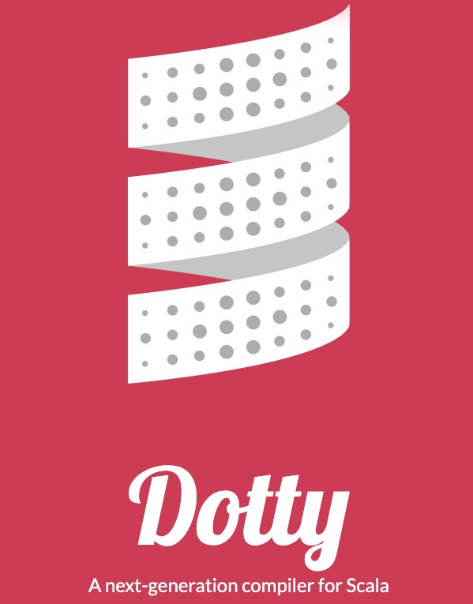

真的学不动了：Scala3 与 Type classes
2020/07/19 10:45 · By vran
引言
Type classes 源自 Haskell，在 Scala 中并没有直接的语法和概念，但却可以借助于强大的隐式系统间接实现，一般称之为 Type classes Pattern。
Type classes pattern 可谓是 Scala 中的屠龙技之一，然而这一招式随着 Scala3 的发布也产生了巨大的变化……
关于 Type classes 更多内容，可以参考 《真的学不动了: 除了 class , 也该了解 Type classes 了》。
回顾 Scala2 与 Type classes
Scala2 中 Type classes Pattern 有个固定的套路
- 基于 trait 和泛型定义 Type class
- 实现 Type class 实例
- 定义包含隐式参数的函数
下面用 Scala2 中的 Type classes Pattern 来改造一下经典的 Comparator 接口，相比于上一篇文章，这里的实现会多一些细节。
trait Comparator[T] {
def compare(a: T, b: T): Int
}
object ComparatorInstances {
implicit val intComparator = new Comparator[Int] {
override def compare(a: Int, b: Int) = a.compareTo(b)
}
implicit def listComparator[T](implicit cmp: Comparator[T]) = new Comparator[List[T]] {
override def compare(a: List[T], b: List[T]): Int = {
(a, b) match {
// 连个都为空
case (Nil, Nil) => 0
// 某一个为空
case (Nil, _) => 1
case (_, Nil) => -1
// 两个都不为空，
case (l, r) =>
// 比较头结点
cmp.compare(l.head, r.head) match {
// List.tail 表示除了头结点以外的结点
case 0 => compare(l.tail, r.tail)
case num => num
}
}
}
}
}
object Same {
def apply[T](a: T, b: T)(implicit cmp: Comparator[T]) = cmp.compare(a, b) == 0
}
稍微要说一下的就是 listComparator 这个函数了，这种用 implicit def 定义的方法一般称之为「隐式转换方法」。
隐式转换方法就是由编译器把参数的类型转换为返回值的类型（不需要显示的调用该方法）。
而 listComparator 函数的作用就是当你需要 Comparator[List[T]] 的实例时，编译器会在作用域内找到 Comparator[T] 的实例，然后将其转换为 Comparator[List[T]] 的实例。
如果没有这个方法
- 处理 List[Int] 时需要定义一个 Comparator[List[Int]] 类型类实例
- 处理 List[String] 时需要定义一个 Comparator[List[String]] 类型类实例
- ……
有了该隐式方法以后
- 处理 List[Int] 时，编译器会找到 Comparator[Int] 的实例， 然后根据该方法得到 Comparator[List[Int]] 实例进行处理
- 处理 List[String] 时， 编译器会找到 Comparator[String] 的实例， 然后根据该方法得到 Comparator[List[String]] 实例进行处理
- ……
其实最主要的作用就是在处理高阶类型时能复用已有的 Type class 实例。
最后再来测试一下， 调用前需要先将 Type class 实例都导入（正常的 import 语法）到作用域内
import ComparatorInstances._
Same(1, 2)
Same(List(1, 2), List(1, 2))
在 Scala 中实现 type classes，很多时候还会使用函数扩展来简化调用，Scala 中的函数扩展是基于隐式类来实现的。
比如下面的代码就是在不修改 T 类型的情况下为 其扩展了 < 、 > 和 isSameTo 三个个函数
object ComparatorInstances {
// ...
implicit class Ops[T](a: T)(implicit cmp: Comparator[T]) {
def isSameTo(b: T) = cmp.compare(a, b) == 0
def <(b: T) = cmp.compare(a, b) < 0
def >(b: T) = cmp.compare(a, b) > 0
}
}
结合 Type classes Pattern 和函数扩展，使得调用更加自然（中缀式表示）
import ComparatorInstances._
Same(List(1, 2), List(1, 2))
// 函数扩展为 List 扩展了 < 函数
List(1,2).<(List(1, 3))
// 也可以省略 . 和参数括号
List(1, 2) < List(1, 3)
// 函数扩展
List(1,2).isSameTo(List(2, 3))
List(1, 2) isSameTo List(2, 3)
虽然借助于隐式系统实现了 Type classes, 但还是有刺可以挑的
-
语言层面的支持不友好
引入了晦涩的隐式转换等概念，而这也是导致 Scala 的 Type classes 难以掌握的原因之一。
难道就不能有更友好的语法支持吗？
-
实例导入冲突
我明明只是导入了某些依赖，但这个依赖里面却有 type class 实例，它覆盖了我期望调用的实例，造成了非常隐秘的 BUG。
（从另一个角度来说，这个实例可覆盖又是一个灵活性的体现）
难道就不能区分普通的 import 和 type class 实例的 import 吗？
对于使用隐式系统实现 Type classes 的缺点，还可以参考 《The Limitations of Type Classes as Subtyped Implicits》
探秘 Scala3 与 Type classes
在 Scala 2 中，隐式系统是造成 Type classes Pattern 难以掌握的原因之一。
而在 Scala3 中，将再也不用为 纠结 implicit 该怎么用了， 它被全新的 Given、Using 、Extension Method 等特性所替代。
要使用 Scala3 的语法的话，需要到 https://dotty.epfl.ch/ 下载 Dotty 编译器

Talk is Cheap，我们用 Scala3 的语法再次改造一遍 Comparator 。
Given 与 Type class 实例
首先是 Type class 的定义，这一块和以前没有区别，还是基于 trait 和泛型。
trait Comparator[T] {
def compare[T](a: T, b: T): Int
}
然后就是实现 Type class 实例了，用全新的语法 given...as 来实现。
given intCompare as Comparator[Int] {
override def compare(a: Int, b: Int) = a.compareTo(b)
}
given 后面跟实例名称， as 可以指定类型，实际体验和「匿名类」的构造很相似。
given 支持命名构造和匿名构造，当使用匿名构造时编译器会为实例自动生成一个可读的名称，下面展示了具体的代码：
object ComparatorInstances {
// 命名构造
given intComparator as Comparator[Int] {
override def compare(a: Int, b: Int) = a.compareTo(b)
}
// 匿名构造 自动生成可读的实例名称： given_Comparator_String
given Comparator[String] {
override def compare(a: String, b: String) = a.compareTo(b)
}
// 高阶函数命名构造
given doubleComparator as Comparator[Double] = instance[Double]((a, b) => a.compareTo(b))
// 高阶函数匿名构造
given Comparator[Float] = instance[Float]((a, b) => a.compareTo(b))
private def instance[T](func: (T, T) => Int) = new Comparator[T] {
override def compare(a: T, b: T) = func(a, b)
}
}
Using 与 Given
前面通过 given 实现了类型类实例，可是什么时候使用这些实例呢？
这就轮到好基友 using 出场 了， using 用于修饰参数。
被 using 修饰的参数称之为上下文参数，该参数可以不用手动传入，编译器会在作用域内寻找匹配的 given 实例传入（类似于 Scala2 的隐式参数）。
object Same {
// 命名上下文参数
def apply[T](a: T, b: T)(using cmp: Comparator[T]) = cmp.compare(a, b) == 0
}
Given Import
前面提到『编译器会在作用域自动寻找匹配的 given 实例』，在 Scala2 以前主要是通过 Import 导入，也就是 import ComparatorInstances._ 。
在 Scala3 中即使这样导入了，编译仍然报错：提示找不到对应的实例。
这是因为针对 given 实例的导入也有了单独的语法，特意用于区分普通的依赖导入。
Scala3 中，given 实例的导入称之为 `given import， 它的语法也很简单
// 导入单个实例
import xxx.{given aInstance}
// 通配符 导入所有实例
import xxx.{given _}
通过 ComparatorInstances 验证一下
// 导入所有 given 实例就用占位符 _
// 也可以只导入某一个实例
import ComparatorInstances.{given _}
Same(1, 2)
Same(1.2F, 2.2F)
Same(1.2D, 2.2D)
Same("ok", "ok")
这样，一个 Scala3 版的 Type classes Pattern 就完成了，一个 implicit 也看不见了。
相较于 Scala2 版，并没有减少多少代码量，但更直接的语法支持却是大大增强了可读性。
下面是自创的一个新版 Type classes Pattern「记忆语法」
[使用]编译器在[作用域内]找到的[给定实例]
[using]………….[given import]……[given instance]
Extension Method
在 Scala2 中要实现函数扩展得基于 implicit class，但是光看名字很难将这两者关联起来。
好在 Scala3 也注意到了这个问题，索性就之间新增了一个extension method 的特性，实际就是函数扩展。
Extension method 是一种新的函数定义语法（忘记 implicit class 吧），参考下面的代码
trait Comparator[T] {
def compare[T](a: T, b: T): Int
def (a: T) >(b: T) = compare(a, b) > 0
def (a: T) <(b: T) = compare(a, b) < 0
}
> 和 < 就是全新的函数扩展语法
a: T就是需要扩展函数的类型b: T就是函数的实际参数
假设 T 为 String 类型，那么我们就可以直接写出下面的中缀式调用语法
// 为字符串扩展了 > 函数
"ok".>("hello")
// 也可以省略 . 和括号
"ok" > "hello"
除了为类型扩展函数外，该语法也可以实现 Scala2 的隐式方法的功能。
我们将 Scala2 中 implicit def listComparator 实例用 extension method 的语法再实现一遍（还需要借助 using）
object ComparatorInstances {
// ......
def [T](a: List[T]) listInstance(using cmp: Comparator[T]): Comparator[List[T]] = new Comparator[List[T]] {
override def compare(a: List[T], b: List[T]): Int = {
(a, b) match {
case (Nil, Nil) => 0
case (Nil, _) => 1
case (_, Nil) => -1
case (l, r) =>
cmp.compare(l.head, r.head) match {
case 0 => compare(l.tail, r.tail)
case num => num
}
}
}
}
}
旧瓶装新酒？
如果你已经跨过了隐式系统那道门槛，这样的语法改变可能并不会给你带来多大的惊喜，感觉就像旧瓶装新酒一样，似乎没多大的新意？
而在我看来这样的「旧瓶装新酒」却是 Scala 提升亲和力的体现，当然 Scala3 也不止这些改变，更多特性可以参考 https://dotty.epfl.ch/docs/reference/overview.html。
比较 Scala2 与 Scala3
given、using、extension method 等特性在 Scala3 被统一称之为抽象上下文（Contextual Abstractions），前面已经或多或少拿它们与 Scala2 的隐式系统做过参照了。
不过这里还是打算单独拿出来对比一下，就相当于一个简单的总结吧。
1、 given 可以当做无参的 implicit object 或 implicit val
given intComparator as Comparator[INT] { ... }
implicit object intComparator Comparator Ord[Int] { ... }
implicit val intComparator = new Comparator[Int] { ... }
2、using 可以当做以前的隐式参数
def same[T](a: T, b: T)(using cmp: Comparator[T]) {...}
def same[T](a: T, b: T)(implicit cmp: Comparator[T]) {...}
3、extension method 可以当做以前的隐式类
trait Comparator[T] {
def compare(a: T, b: T): Int
def (a: T) >(b: T) = compare(a, b) > 0
def (a: T) <(b: T) = compare(a, b) < 0
}
implicit class ComparatorOps[T](a: T)(implicit cmp: Comparator[T]) {
def <(b: T) = cmp.compare(a, b) < 0
def >(b: T) = cmp.compare(a, b) > 0
}
一些期待
开发者们一直喜欢拿 Scala 和 Haskell、Java 作比较，甚至在对应社区一直有这样的声音
- A worse Haskell for the JVM
- A better Java
造成这些印象的原因是 Scala 融合了 OOP 和 FP 两种编程范式，但这也恰好是 Scala 一直坚持的方向。
随着 Scala3 的发布，是不是会带来不一样的惊喜呢？有点期待